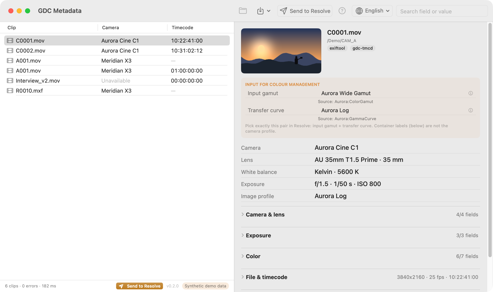

GDC Metadata
Read camera, lens, exposure, white balance, image profile and timecode from multi-camera folders, see where each value comes from and send it to the DaVinci Resolve Media Pool. Everything stays on your Mac; originals are never modified.
Download for macOS Version 0.2.0 · free · signed and notarized DMG
Input gamut and transfer curve
At the top of the inspector, per clip: the input gamut and the transfer curve the camera recorded, each with its own source, so you know which input to choose in colour management. Verified: Canon Cinema EOS / EOS R MP4 with the cndm metadata track — Canon Log 2 vs Canon Log 3 with Cinema Gamut, confirmed against DaVinci Resolve (decoded by GDC; Canon does not document the format). When the file carries nothing, both stay Unavailable and nothing is assigned; container labels and maker-note hints are shown separately and never presented as the camera profile. Setting Input Color Space in Resolve is a separate, explicit, confirmed action that works in DaVinci YRGB Color Managed projects and never overwrites an existing choice.
Folder → inspector

Find any value

Send to Resolve

Motion & stabilization

Requirements
- macOS 14 or later.
- ExifTool (for example: brew install exiftool).
- Python 3 from the Xcode Command Line Tools — only for sending to Resolve.
- DaVinci Resolve running, with external scripting set to Local — only for sending to Resolve.
- Empty Resolve fields are written; existing values are kept; a clip present in several bins is skipped as ambiguous (verified in Resolve after reopening the project).
- CSV export is an alternative, but Resolve's import can overwrite existing values, and with duplicate file names every clip with that name gets the same values. Options verified: Match using filename on, clip start/end Timecode off.
- A sidecar <clip>.gdc-metadata.json is written next to each clip; originals are only read.
Version and updates: the installed version is in the bottom bar and in About; Check for Updates… / Update Now install new releases from inside the app.
Already on 0.1.0? That version has no updater: install the new DMG once (drag the app over Applications, choose Replace). From then on use the app menu → Check for Updates…
Manual (PDF)
PDF · English PDF · Română PDF · Español
User guide · GitHub · MIT licence · © 2026 Cristi Gordaș
All images use synthetic demo data.